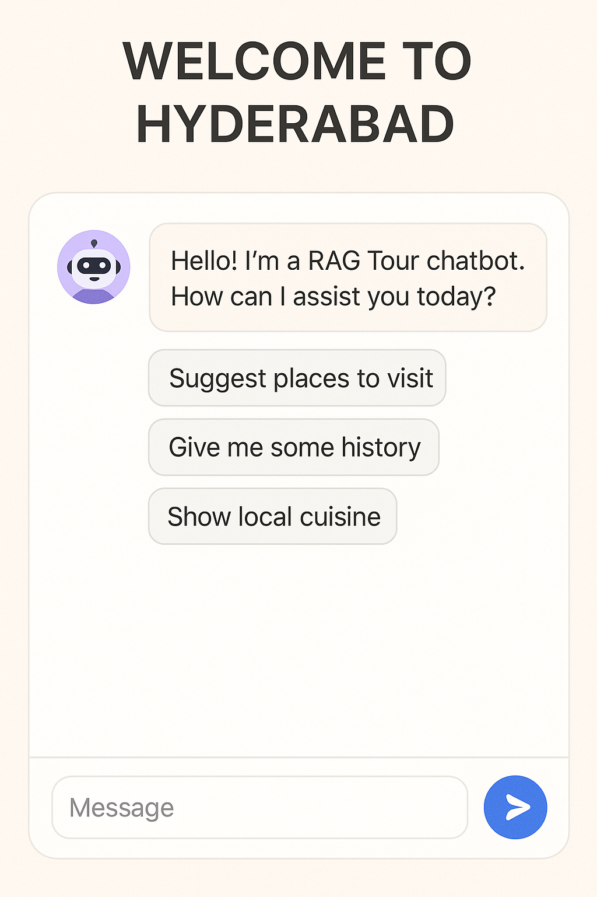

The goal of this project is to develop an intelligent chatbot that acts as a city tour guide. It provides tourists with accurate, real-time information about places, landmarks, history, and local tips using Retrieval-Augmented Generation (RAG). Unlike traditional chatbots that rely solely on pre-trained models, this system can search a document store to provide up-to-date and contextually rich responses.
The system leverages Natural Language Processing (NLP), information retrieval, and deep learning techniques. It uses a pre-trained language model for generation and a dense retriever to fetch relevant documents from a local or online knowledge base. The chatbot can be deployed on web or mobile platforms to interact with users in real time, answering questions about tourist destinations, transport, food options, culture, and more.
Current digital tour guide solutions are mostly rule-based or app-driven with static content. They lack the flexibility to answer spontaneous tourist queries and often require constant manual updates. Traditional virtual assistants like Siri or Google Assistant offer general answers but are not optimized for city-specific travel experiences.
We propose a dynamic and intelligent chatbot powered by the RAG architecture. The system includes the following components:
By integrating retrieval-augmented generation with a conversational interface, the system offers a smart, adaptable, and user-centric tour guide experience. Unlike static apps or generic assistants, this chatbot provides tourists with personalized and detailed information, enhancing their travel experience in real time.
